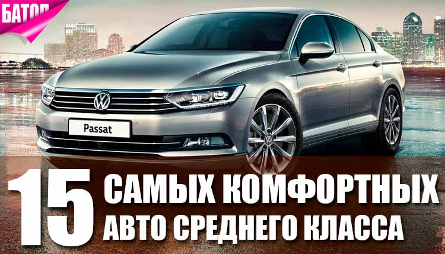

Средний класс

Иномарки среднего класса (также известные как класс D или европейский семейный класс) — это баланс комфорта, технологий и стоимости. Они идеально подходят как для ежедневных городских поездок, так и для семейных путешествий.Популярные иномарки среднего классаВ этом сегменте выделяется несколько проверенных моделей, которые традиционно пользуются высоким спросом:Hyundai Sonata и Kia K5 — яркие, технологичные корейские седаны с отличным оснащением и богатым набором современных опций комфорта.Skoda Octavia — лидер по практичности и вместительности. Обладает огромным багажником и европейской управляемостью.Mazda6 — автомобиль с выразительным дизайном (знаменитый стиль бренда) и качественными материалами салона. Традиционно ценится за хорошую надежность.Toyota Camry — бессменный фаворит благодаря высокому уровню комфорта подвески, просторному салону и высокой ликвидности на вторичном рынке.Volkswagen Passat — эталон немецкой функциональности с отменными ездовыми качествами и солидным внешним видом.На что обратить внимание при выбореЕсли вы планируете покупку такого автомобиля, стоит детально изучить рынок, чтобы подобрать оптимальный вариант.Если вы укажете:Ваш бюджет (планируете покупку нового авто или с пробегом)Предпочитаемый тип кузова (седан, универсал или кроссовер)Главный приоритет (динамика, надежность, стоимость обслуживания или комфорт)Я могу подобрать для вас конкретные комплектации, сравнить их между собой или найти актуальные предложения в вашем регионе. Напишите, что именно для вас важнее всего при выборе машины! .